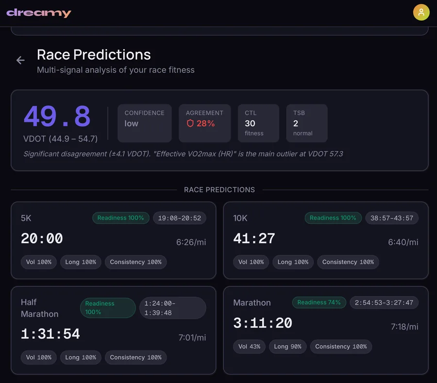
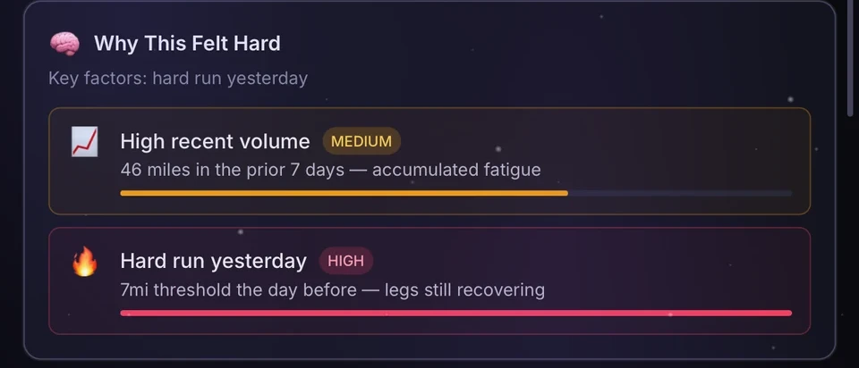
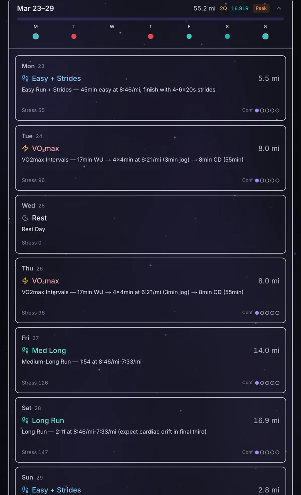
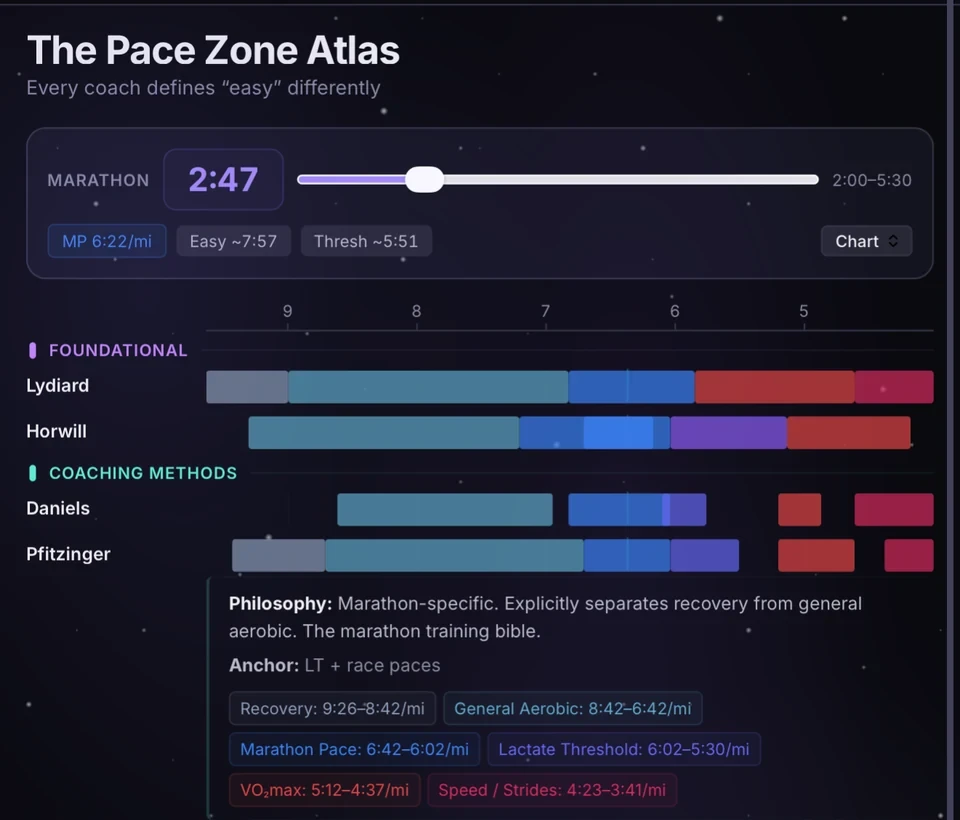
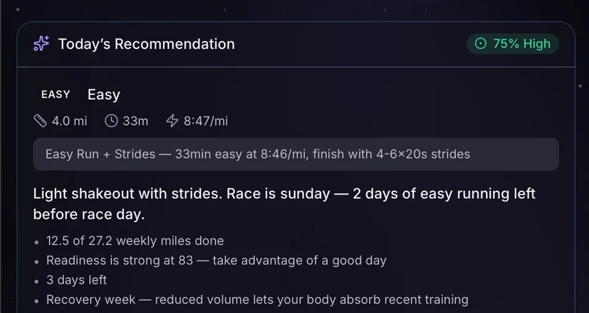
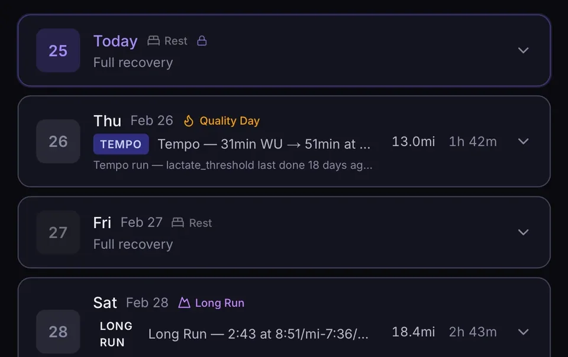
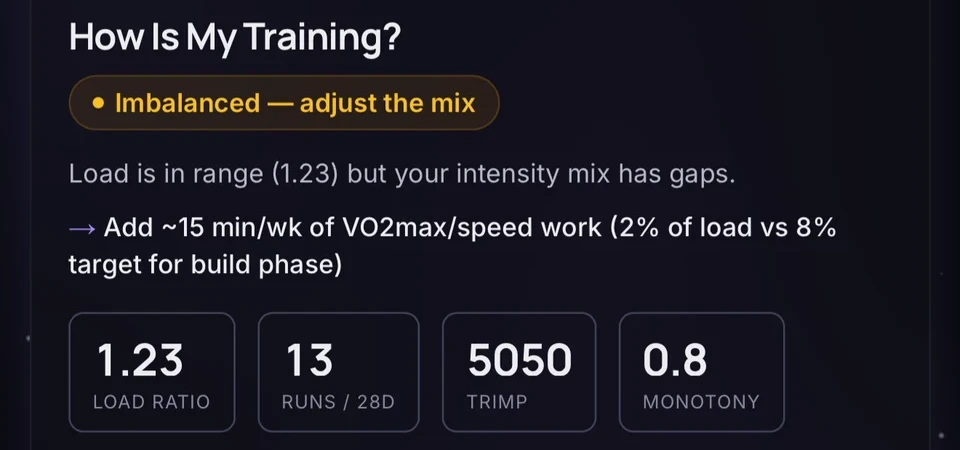
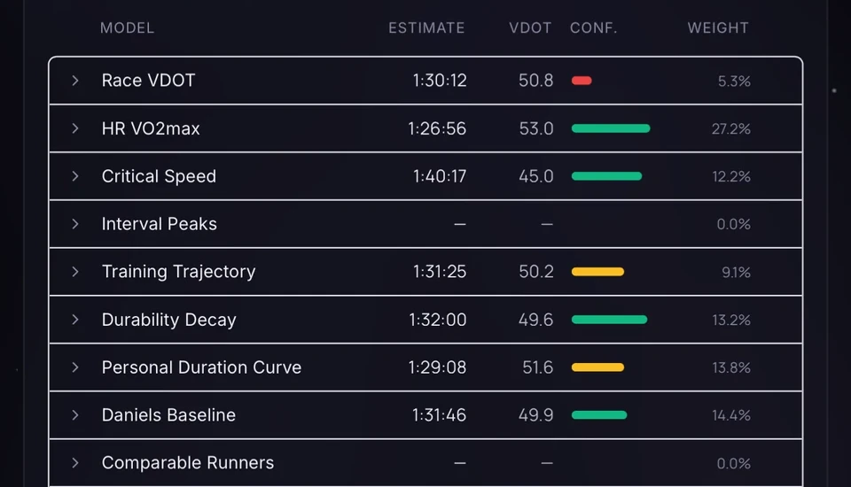

How I built Dreamy
Chatbot coaches improvise. Dreamy runs published rules on your data, and AI only explains them.
Dreamy is an AI running coach I built with Claude Code over twelve weeks while I was still working full time at Morgan Stanley. It's for people like me who don't have a reliable 9 to 5, have a busy social life, and still want to run their best marathon. It's technical on purpose: it explains the science behind each workout so you learn to coach yourself. Dreamy's plans come from rules taken from the research, it analyzes every run you sync from Strava, and it works around the days you can't run.
15 runners trained on Dreamy through full race cycles, in the app or on plans I made with its engine. 14 of the 15 rated it above the coach or app they used before. What it didn’t prove
Why I built it
I got into running in 2023, when a bunch of my friends signed up for a half marathon and I did too. Once I wanted to see how fast I could get, I looked for a training plan, and nothing worked for me. The plans assumed perfect weeks that never existed. Then I started using ChatGPT and thought, wow, this can be so good. But it took a lot of prompting and a lot of learning on my own to know what was good and what wasn’t. I figured there had to be a better way.
How it started
The models kept giving me bad plans, so I read up on sports science and the top running coaches and kept rewriting my prompt until the answers got good. I ran a PR and shared it with my run club. The prompt only grew, past 11,000 words, and I wanted more than a prompt could do. Nothing checked it against the research, you had to be really good at prompting to get something usable, and it didn’t sync with anything or look at your actual runs.
What it does that a prompt couldn’t
With Dreamy, the plan comes from rules taken from the research, it syncs with Strava and analyzes every run, and the same data always gives you the same plan. The biggest difference is that it works around your schedule. You tell it which days you can't run and it rebuilds the week around them, so you might run seven days one week and four the next. It adapts when you miss a workout or a race moves, and it explains every change and the science behind it, so over time you learn to coach yourself.
What I built before Dreamy
RunningBuilding
May 2023Brooklyn Half, my first race, 2:02:33
I ran maybe 30 miles in the three months before it, mostly 2 to 3 mile runs and one 6.5. I figured if I could run 6.5 miles, I could finish a half. The next week I went to my first Endorphins run.
Summer 2023Signed up for a full marathon
About a month after I joined the run club, seeing everyone else train for a half, I decided to run a full. I signed up for the Philadelphia Marathon and started NYRR’s 9+1 for the next year.
Summer 2023A 15-mile long run turned into my first 26.2
I ran from Montauk to about Sag Harbor. Right there I knew I had to run New York that year, so I emailed about 40 charities for a spot and got one that was personal to me.
Oct 2023Staten Island Half, 1:33:15
Half an hour faster than my first half.
Nov 2023NYC Marathon, 3:21:30
My first marathon race, with a negative split.
Nov 2023 to Apr 2024ChatGPT as my coach
ChatGPT was my coach for London. This was when prompt engineering was a thing, and I kept rewriting one long prompt with my real week in it.
Apr 2024London Marathon, 3:10:33
An 11-minute PR on the ChatGPT plan. It’s still my marathon PR.
May to Jun 2024The science in Sheets
I built the science in Google Sheets: a fatigue score for any workout, live weather every six hours, and 79 workouts scored by what they train.
Jun 2024Heat Adjusted Pace
Heat Adjusted Pace, my first website and my first GitHub account. A week later, a one-page pitch for Charlie, an AI coach that reads your Garmin, Strava and the weather: “You have a work happy hour Friday? Let’s move your speed workout to Thursday.”
Dec 2024 to Jan 2025The prompt became the product
The prompt became the product: a plan generator with an intake questionnaire and a preamble built from Daniels, Pfitzinger, Hansons, Canova, Magness and 80/20. Claude, Gemini and ChatGPT each picked it apart. I shared it around, and the founder of Endorphins asked me to take it down because it did what their app was for.
Feb 2025My first real app
My first real app, in Flask, with the OpenAI API writing the plans. The goal I wrote down then still runs Dreamy: get the most fitness for the fatigue. That September came STRIDE OS, a coaching prompt with slash commands and an 85-question intake. The repo still has the name.
Jan 2026Claude Code
Claude Code. Traum means dream in German, so it became Dreamy.
- Feb 2026getdreamy.run went live
How runners get a plan
In August 2023 ChatGPT planned my first marathon around my races and trips. Six weeks later WHOOP put GPT-4 on its strap data, and Google previewed a Gemini coach in October 2025. Two years of prompting taught me the chatbot can’t be the coach, so in Dreamy the rules make the plan and the AI explains it.
What launched when
How my prompt grew, and which model ran it
Words in the first message of each chat in my ChatGPT history: the prompt, sometimes with my answers filled in. Each dot is labeled with the model the export lists for that chat.
Sources for the map
The race forecast
Most apps give you one predicted race time from one method. Dreamy runs a bunch of separate models and blends them. This is my own half marathon forecast from March.
Half marathon forecast by model
My half marathon forecast as the app showed it in March 2026: ten models, eight with enough data to vote, with HR VO2max carrying the most weight. By April the engine ran nine live models plus a durability adjustment.
- Each model gives an estimate and a confidenceIts weight is a base weight times that confidence.
- Models that drift from your races lose weightToo-optimistic ones lose it faster. A model 8 percent faster than your races gets zero weight, while a slow one gets there at 10 percent.
- Your own races anchor itIt’s a small meta-analysis of your races, pooled with random effects (Paule-Mandel, with the Hartung-Knapp correction). A race that went wrong counts as censored data, and old races you’ve since beaten count as floors.
- The range leans slowIt comes from six named sources of uncertainty, because more things go wrong on race day than right. Models that use the same inputs don’t count as separate votes.

The weights were still set by hand when the main build ended. The part that would tune them against real race results wasn’t running yet.
How it sees you
Dreamy keeps a model of you and updates it every day from what you actually ran. Fitness and fatigue follow Banister’s model, with 42- and 7-day time constants. Under that, seven systems each build and fade at their own speed, and on a bad day it only counts 40 to 70 percent of a workout.
Seven training systems, and how fast each one builds and fades
Where these numbers come from
Time constants in days, from simulator/constants.ts: build then fade. The ranges come from Granata 2016, Mujika & Padilla and Magnusson 2010. The exact values are starting guesses the app was supposed to tune for each runner, and that tuning never went live.
How much you get out of a workout depends on how ready you were. The research backs the direction, and I picked the exact cutoffs myself.

The plan
Every plan aims for the most fitness for the fatigue. Dreamy rebuilds the week in the same order every time, based on what you actually ran and which days you have, then picks each day’s workout from 133 templates.
Try it: tap the days you can't run
A simplified version of Dreamy's scheduling rules, running in your browser.
How this demo differs from the app
This is a simplified copy of Dreamy's week-skeleton.ts and mileage-enforcement.ts. Weekly totals land within about a mile of the target. It places runs in the same order, keeps the same 48 hours between hard days and uses the same mileage rules, and easy days stay at or under 80 percent of the long run. In the app you set how many runs and quality sessions you want each week; here they follow the weekly miles (4 runs and one quality session at 25 miles or less, up to 7 runs above 50). The real app also looks at your fitness, fatigue, the weather and your recent runs before it picks each workout.
The six rules it follows
- Days you can't run come off first. Everything else gets planned around them.
- The long run goes on your preferred day. If that day is gone, it moves to the other weekend day, then to the nearest open day.
- The day after the long run is a recovery run.
- Quality sessions go on your preferred days, never next to the long run, at least 48 hours apart, and never longer than the long run. If those days are gone, they move to any open day that fits. Once Dreamy has learned how fast you recover, it uses your recovery time instead of 48 hours.
- Other open days get easy runs until you reach the number of runs you set for the week, and the rest are rest days. That's how you can get four runs one week and seven the next.
- Miles are rebalanced to hit the weekly target. Easy days take the changes first, up to 3 miles each, and no run goes below 2 miles. Quality days and the long run change last. If there's no way to hit the target, it tells you instead of overloading the runs you have.
What happens after the week is set
Then the daily engine picks the actual workout for each day from 133 templates. It simulates seven training systems one day at a time and redoes the rest of the week every day based on what you actually ran.
A few safety rules override everything else. You get a forced rest day after 14 straight days of running, when you say you're sick, or when your readiness drops below 25 out of 100. The day before a race is a shakeout of 4 miles or less, and there's nothing hard in the three days before it.
Every change shows what moved, and you can undo it.

The research, and the alternatives
I wanted every rule in the engine to trace back to a source. I ran the research through ChatGPT and Gemini deep research and Claude at the same time, compared what they found, had them check each other, and gave them a ton of direction from my own running. Claude Code turned the results into reference docs in the repo before building anything, and for the forecast nothing got built until I signed off. Then I had Codex audit the code over seven rounds.
The sources in the engine, and what each one does
- Daniels & GilbertVDOT and training paces
- PfitzingerPeriodization and recovery hours by workout type
- Hansons16-mile long run cap and cumulative fatigue
- CanovaRace-specific work at 95 to 105 percent of goal pace
- Seiler 2010, FitzgeraldThe 80/20 intensity split
- Bowerman48 hours between hard days
- Banister 1975Fitness and fatigue with 42- and 7-day time constants
- Mujika & Padilla; Granata 2016How fast fitness fades
- Joyner & Coyle 2008Threshold capped at 85 to 90 percent of VO2max
- 5,200-runner cohort, BJSM 2025Injury risk from single-run spikes
- Ely 2007; El Helou 2012Heat and dew point slowdown, scaled by ability
- Minetti 2002The energy cost of hills
- Riegel 1981; Tanda 2011Race-time models
- Paule-Mandel; Hartung-Knapp; TukeyStatistics for the race anchor
More on the research
I did an absurd amount of research for it. I used AI to find every marathon plan and sports science paper I could, and gave it a ton of direction from my own marathon training. I started with an LLM writing the plans, but that got expensive and unreliable, so I switched to a rules-based engine. Then I ran real runners' histories through it, had LLMs grade the plans against the research and suggest changes, and reviewed every round myself.

Testing it
Can ten models beat a free race calculator?
A free race calculator takes one recent race and predicts your other times. Dreamy’s forecast sees that race plus every run you’ve logged, so it should do better. So I built a lab to check.
Each forecast gets scored on its error, on CRPS, which grades the whole range, and on how often the true time lands inside the range. A change only goes in if it’s never worse than the calculator at any distance.
- A fake runnerTrue fitness known every day for 15 months
- Their training logRuns, heart rate and races, the way a watch and Strava record them
- The same engine as the appA forecast every month
- ScoredAgainst the truth and against the calculator
33 fake runners of 11 types. Two of the types are built to break the engine’s assumptions. In one, speed falls off with distance on a different curve than it expects. In the other, fatigue piles up faster than its model allows.
It lost at the marathon. Now it’s about even.
Average error on the same 284 forecasts at each distance, from the 25 runners who had a race for the calculator to work from. Shorter is better.
All numbers in this section come from synthetic runners.
How this was computed
Error is how far a forecast landed from the runner’s true race time that day, as a percent. The race calculator here is Jack Daniels’ VDOT tables run on the runner’s best race of the past year, the method behind many free calculators. Before is the engine when I started the rebuild, after is the first round of fixes. The lab is confident Dreamy is better at the 5k, 10k and half. At the marathon the gap is too small to call.
One runner’s season
How this was computed
Fifteen months of one fake runner. The white line is their true race time, the band is the range Dreamy gave each month (the 10th to the 90th percentile, where it expects the true time to land 8 times out of 10), and the grey steps are the race calculator, which only moves after a race. Small triangles along the bottom mark their races. For each runner type I show the middle of its three runners by average error, so the example isn’t the best or the worst one.
The race floor pulled a 3:31 marathoner to 3:02.
On race day that’s being told to run 6:56 a mile when your true pace is 8:04.
The floor is meant to stop a forecast from drifting slower than a race you’ve already run. Here it fired at full strength and took about 25 minutes off. I’m testing a fix now that weakens it the further apart the distances are and the older the race is.
How this was computed
One synthetic runner who races every few weeks, on November 1, 2025 in the simulation, before the fixes. The engine’s forecast module prints each step, and these are its numbers. The app’s own headline for this runner that day was 2:56:48, even further off.
Two kinds of runners are still far off. Without a heart-rate strap, forecasts come out 12 to 16 percent too slow from the 5K to the half. For beginners who never race, they come out 27 percent too fast at the marathon, and there’s no race to check them against.
Go deeper
- Forecast LabEvery engine change, scored against fake runners with a known truth.
- Forecast explorerPick a runner and a distance to see each model’s estimate, the blend and the true time.
- From run file to race forecastOne run, traced from the watch file to the final forecast.
- Weather and hillsHow heat, humidity and hills change a pace.
The Lab pages use synthetic runners.
Where the LLM sits
At first an LLM was writing parts of the plan. It was expensive and it wasn't reliable, so I moved every training decision into regular code. I wanted LLM costs under $5 a month per runner, and I wanted the same data to always give the same plan. Now the LLM only talks to you about it.
Your data
- Strava runs, heart rate streams and laps
- HRV and resting heart rate from Intervals.icu
- Weather for every run
- Check-ins: sleep, soreness, days off
Run pipeline
- Classifies the run and detects intervals
- Training load, zones, efficiency, decoupling
- Mines best efforts for the forecast
Athlete state
- Fitness and fatigue, 42 and 7 days
- Seven adaptation systems
- Fitness signals and readiness
Daily engine
- Week skeleton and mileage rules
- Workout optimizer over 133 templates
- Safety overrides
- Race forecast
LLM coach
- Claude, routed by question
- 96 tools that call the engine
- Explains, answers, makes changes you ask for
Regular codeClaude
What I learned from the beta
How I asked
I asked each runner myself, and they’re all running friends.
Heart-rate VO2max can flatter you.
One runner's heart-rate model said VDOT 54 while their races said 46 to 48. Now any estimate that runs way ahead of real races gets set aside.
Most of the early bugs were in the data, not the models.
One runner's import quietly failed on 922 of 1,211 runs.
Plans have to know about races.
After a race, one plan jumped 30 percent in mileage. The week after a race is now capped at a 15 percent increase.
Related fixes have to ship together.
One runner's forecast only came out right once four model fixes landed at the same time, so model changes now go out together.
Real histories caught bugs my tests missed.
A race goal saved as 71 seconds instead of 71 minutes, and training blocks that got duplicated.
Three models can outvote real races.
For one runner, three models that measure the same thing agreed with each other and made the marathon forecast 15 to 20 minutes too fast.
The code reviews found real problems.
Codex caught that the forecast's range was about 7 times too narrow, and that heat was counted twice for marathons.
I froze features before my own marathon.
For the two and a half weeks before it, nothing new shipped, so nobody's predictions moved under them.
Working with Claude Code
Claude Code wrote the code. I decided what the engine should do, did the research behind it, and checked whether its plans actually held up.
How each fix gets made
Each fix to the forecasts gets scored by the lab before the next one starts, and nothing merges until I decide.
- I set the bar
- Claude Code builds the fix
- The lab scores it
- A second Claude reviews it with me
- I decide
How I set the repo up for working with AI
I set the repo up for working with AI. A CLAUDE.md sets the rules, like keeping the engine away from the database and never rewriting the VDOT math. When I corrected something, it went into a lessons file as a new rule. A test fails the build if any API route doesn't say who's allowed to call it, and every change runs type checks, lint, all the tests and a production build.
From the repo
From the repo, as of the end of the main build: 1,985 commits between January 28 and April 20, 95 percent of them co-authored with Claude; about 16,000 automated tests in 281 files; 63 database tables; 96 tools the coach can call; and 133 workout templates.
The build, date by date
Most of the app got built between mid-February and mid-March.
Commits per day, January 28 to April 20, 2026, from the repo.
Jan 28, 2026First commit
First commit. The prompt becomes an app.
Feb 19One question, three AIs
Same research question to Claude, Gemini and ChatGPT. I merge the three answers with my roadmap.
Feb 23Every decision into code
I decide to move every training decision into code. The LLM just talks.
Mar 1Pace Zone Atlas
Pace Zone Atlas: 22 coaching systems' zones on one axis.
Mar 2Seven-system simulator
Seven-system simulator with research-backed constants. Single-run spike detection replaces the acute:chronic workload ratio.
Mar 10 to 15Deep research reports
Deep research reports on training adaptation and race forecasting.
Mar 20Forecast review
Multi-model review of the forecast and a redesign plan.
Apr 7Race anchor sign-off
Race anchor research: 15 questions to three sources. I sign off before any code.
Apr 8 to 10Codex audit
Codex audit, rounds 1 to 7.
- Apr 20Last commit
The big platforms, and why I stopped
I wrapped up the main build in April, the day after the Jersey City Marathon, and turned off the scheduled jobs so it stopped costing money. I still use the engine to make training plans, for me and for other runners.
Since Dreamy went live the big platforms kept shipping. Strava, which has more than 200 million users and already owned Runna, launched a plug-in that lets Claude read your Strava data, so anyone with Claude can ask about their own runs without a separate app. Runna added heat-adjusted paces six months after Dreamy had them, and Garmin bought TrainingPeaks.
The dates, feature by feature
Runna shipped heat-adjusted paces 6 months after Dreamy. The other two still weren’t out in September.
When Dreamy had it, and when the first big platform shipped it, in 2026.
| Feature | Dreamy | The big platforms |
|---|---|---|
| A coach you chat with that reads your training history | Feb 2026 | WHOOP Coach put GPT-4 on your WHOOP data in September 2023, six weeks after ChatGPT started planning my first marathon. Google previewed its Gemini coach in October 2025 and launched it worldwide in May 2026. COROS connector for ChatGPT and Claude, May 2026. Strava’s Claude connector, June 2026. |
| Training paces adjusted for heat and humidity | Jan 2026 | Runna, July 2026. My standalone heat calculator has been live since 2024. |
| Several forecast models blended, with an agreement score and a range | Mar 2026 | Not in Runna, Strava, Garmin or COROS as of September 2026. Each shows one model's number; Runna adds a range. |
| Pace zones compared across coaching systems | Mar 2026 | No app found as of September 2026. |
Going further would have meant proving the forecasts, testing a price and supporting real users while those platforms caught up. Right now I’d rather build smaller things for needs I can see than turn one into a full business.
What the beta did and didn’t prove
The beta showed runners stuck with it. It didn’t prove two things. One is that the race forecasts are accurate, which I set at about 50 forecasts matched to real race results. The other is that anyone would pay. Nobody was asked to, and a heavy user would have cost $5 to $20 a month in AI calls against my goal of under $5.
How it compares with the other apps
What the other options do comes from each company's own help and pricing pages, as of September 27, 2026. The others are ahead on watch apps, strength plans, real human coaching and scale. Dreamy is a web app that syncs with Strava.
| Option | Days you can't run | Explains why | Race forecast | Price |
|---|---|---|---|---|
| Dreamy | Rebuilds the week around them; run days flex from 4 to 7 | Each day carries the rule that set it; the coach answers follow-ups | Several models blended, with agreement and a range | Private beta |
| Runna | Skipping adapts the plan; after more than three misses it asks how to realign. Moving runs is manual. | Explains pace changes; AI feedback after runs | One undisclosed model, with a range | $19.99/mo |
| Garmin Coach | Adapts going forward from runs, sleep and readiness; users report missed workouts can't be rescheduled | Templated what, how and why on each workout | One model from VO2 max and history, a single time | Free with a watch |
| TrainAsONE | Regenerates the whole plan overnight; blocking a day rebuilds it | No per-workout explanation documented | Machine learning on your history; no range documented | Free tier; £9.99/mo |
| TrainingPeaks | Manual drag and drop | Coach notes, if you have a coach | No predictor; a fitness chart instead | $19.95/mo |
| ChatGPT plan | You re-prompt it; the new plan can contradict the old one | Explains confidently, but nothing checks it against the research | A guess, with no model behind it | $20/mo |
| Human coach | Yes, by hand, as often as the package allows | Yes | Judgment | ~$150 to $180/mo |
| Book plan | No; a fixed schedule | Explains the method, not your week | Static tables, like Daniels' VDOT | $20 to $30 once |
Sources: Runna skipping, realignment, pace insights, predictions, pricing, heat update; Garmin adaptive plans, forum on missed workouts, explanations, race predictor, TrainingPeaks acquisition; TrainAsONE missed runs, blocked days, predictions, pricing; TrainingPeaks moving workouts, pricing; coaching costs; COROS connector; Google Health Coach; Strava connector, Runna acquisition. Dreamy dates are from the repository's commit history.
- Runners stuck with it14 of 15 rated it above what they used before
- Anyone would payNot tested
- The race forecasts are accurateIn the lab it lost to a free race calculator at the marathon, and now it’s about even. The bar I set is about 50 forecasts matched to real races.
Screenshots



